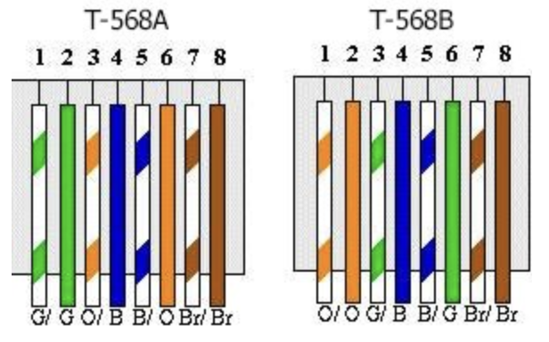
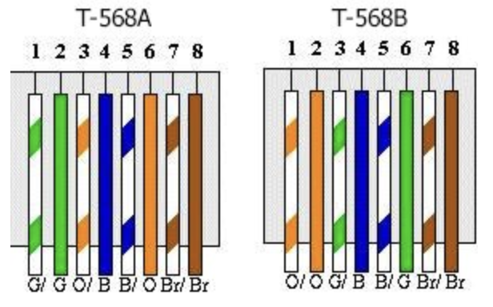

Cat 8 Wiring, comes in 2 variants T-568A and T-568B.

Cat8 replaces the need for crimping tools with field termination …
read moreCat 8 Wiring, comes in 2 variants T-568A and T-568B.

Cat8 replaces the need for crimping tools with field termination …
read moreWhen a Synology NAS creates a VPN connection it overides the default gateway, except for devices listed as contained within …
read moreWhen TeX/LaTeX is fully justifying text there are times when it could do better but it does not know …
read moreparbox is a LaTeX command used to place a box around text.
Remeber that optional arguments are in [] (Square brackets …
read moreLaTeX macros can be used as simple text replacments for example:
\documentclass{article}
\newcommand{\LUG}{LEGO User Group}
\begin{document …WYSIWYG editor for LaTeX lyx, and a manager for Bibliography JabRef.
Lyx Tutorial: Lyx mac Guide
JabRef Tutorial: Getting Started …
read moreChain Cleaning method:
Clean the chain with WD40 (water dispersant).
Wipe dry with kitchen roll.
Spray with Comma White Grease …Creating/Setup a pyhton virtual enviroment called 'venv'
python3 -m venv venv
Load the virtual env called venv
source venv …Convolution in Python, for merging filter responses, creating pascals triangle ...
import numpy as np
a= np.array([1,1])
b …Perforce can temporarily checkins of changes that you might want to share with others before fully commiting them to the …
read more